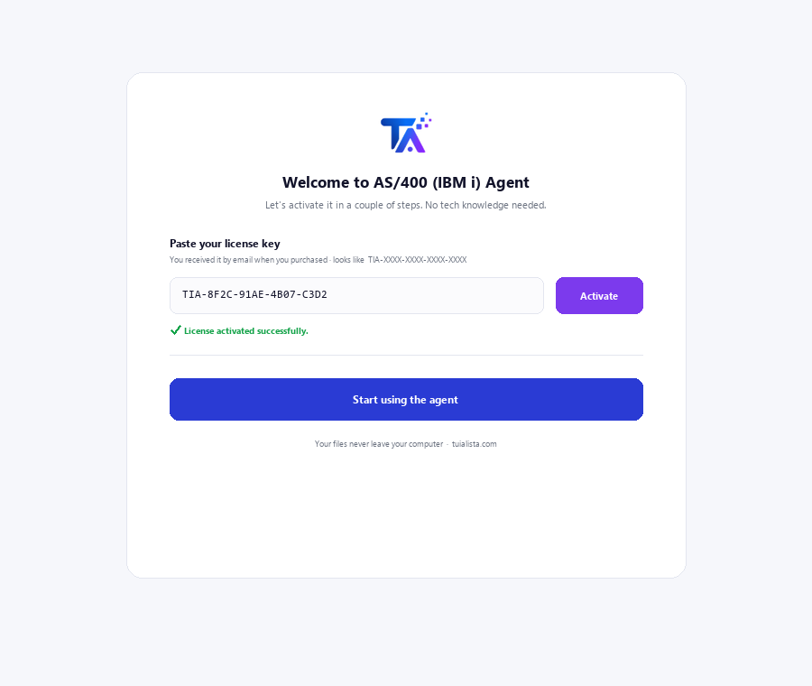
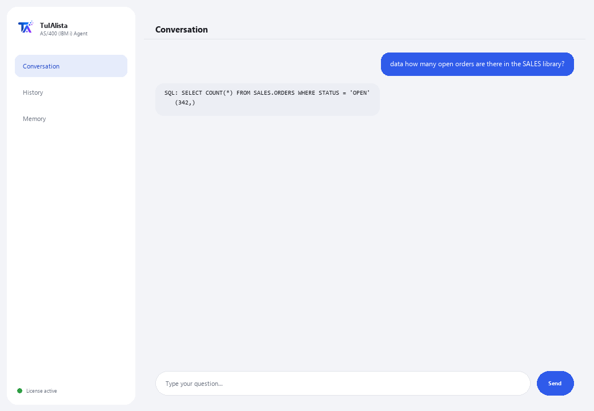

AS/400 (IBM i) Agent · Premium
Query your DB2 for i in natural language and understand legacy RPG/COBOL code — without knowing SQL or the system.
What does it solve and what do you need?
IBM i talent is scarce worldwide. This agent is the bridge between your legacy AS/400 system and natural language: ask a question and it returns real DB2 for i data, or hand it an RPG/COBOL source file and it explains it without jargon.
- You need: your license key (TIA-XXXX-XXXX-XXXX-XXXX) and access to the IBM i (host, user and password, with the IBM i Access ODBC Driver installed). Built for a technical profile (IT / IBM i administration).
- First result: install, activate your license, and after configuring the connection, run data <your question>.
- Your IBM i, its data and your code never leave your network — the connection and queries happen locally.
soporte@tuialista.com or visit tuialista.com/soporte — we usually reply the same business day.1 What this agent does
It solves two expensive pain points that are hard to fill due to the worldwide shortage of IBM i talent:
- Querying DB2 for i data without knowing SQL or the system. You ask in plain language and the agent generates a SELECT query for DB2 for i (read-only), runs it, and shows you the result.
- Understanding legacy RPG and COBOL code. You hand it an RPG/COBOL source file and it explains it in plain language: what it does, what data it handles, and what it produces, without assuming you know the language.
Everything happens locally, inside your network: the connection to the IBM i and the data never leave your infrastructure.
2 Installation
For Windows. This agent has one extra step compared to the others: the connection to the IBM i is configured separately, not from the activation window.
Download the installer from tuialista.com/descargar (AS/400 agent) and open it. It creates a desktop shortcut with the logo — no Python or terminal needed.
Double-click the new icon. Paste your license key (you received it by email when you bought it) and click Activate. Unlike other agents, it won't ask you to choose a folder — this agent connects to a database, not to local files.
Install the IBM i Access ODBC Driver (from IBM i Access Client Solutions) on the machine running the agent, and set the environment variables AS400_HOST, AS400_USER and AS400_PASSWORD with your system's details. This step is usually done by the IT team.

3 How to use it
The agent opens a chat window, like a messaging app — not a programmer's black screen. It has two commands plus exit:

> data <question>Type your question in natural language. The agent generates a SELECT query for DB2 for i (LIBRARY.TABLE syntax), validates it as read-only, and runs it. E.g.: data how many open orders are there in the SALES library? Results are capped at 100 rows per query.
> explain <file>You give it the path to an RPG or COBOL source file and it explains its purpose, the data it handles, and what it produces, without unnecessary jargon.
> exitEnds the session (exit also works).
4 Common use examples
An operational count
data how many invoices were issued yesterday?
A total from a physical table
data sum the order amounts from the SALES library this month
Explain a program “nobody understands”
explain /home/sources/CALCNOM.cbl — ideal when you inherit thousands of lines of undocumented RPG/COBOL.
Bridge to modern tools
Use data to pull figures from the IBM i into a report or dashboard, without exposing the legacy system to external tools.
5 Frequently asked questions
Can it modify or damage the IBM i's production data?
Do I absolutely need the IBM driver?
Does the IBM i's data leave my network?
What code languages can it explain?
Does it generate standard SQL or DB2 for i SQL?
How many rows does a query return?
What language does it reply in?
Why is it “Premium”?
Can I point it at several libraries?
Is the generated SQL always correct?
6 Troubleshooting
“Missing pyodbc and the 'IBM i Access ODBC Driver'”
It won't connect to the IBM i
“Only read queries (SELECT) are allowed”
It says “Invalid license” or asks to reconnect
“No AI providers configured”
None of these fixed your problem? Write to us directly — we'll gladly look into it with you.
soporte@tuialista.com or visit tuialista.com/soporte — we usually reply the same business day.7 Privacy and confidentiality
Your IBM i, its data and your code never leave your network.
- The agent connects to the IBM i locally (inside your network) and runs queries there. Results aren't uploaded to any server.
- Only the schema (table/column names) and your question are sent to the AI to draft the SELECT query, or the RPG/COBOL source you ask it to explain. The data a query returns is never transmitted to the AI engine.
- The only thing that travels over the internet is: (1) a check that your license is active, and (2) the necessary context (schema + question, or the code to explain) to generate the reply.